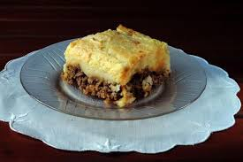

Pastel de Papa

Home
Descripción
El pastel de papa es un plato tradicional y reconfortante de la cocina casera, que combina un relleno sabroso de carne picada condimentada con una capa suave y cremosa de puré de papas. Generalmente se cocina al horno hasta que la superficie del puré se dora levemente, formando una costra apetitosa. Es ideal para los días fríos y se destaca por su textura cremosa, su sabor intenso y su capacidad de rendir varias porciones.
Ingredientes
- Para el relleno de carne
- 500g de carne picada
- 1 cebolla grande picada
- 1 diente de ajo picado
- 1/2 morron
- 2 cucharadas de pure de tomate
- Sal y pimienta a gusto
- Para el pure
- 1 kg de papas
- 2-3 cucharadas de manteca o aceita
- 1/2 taza de leche
- Sal a gusto
- Nuez moscada
- Queso rallado
Paso a paso
- Preparar el puré de papas:
- Pela y corta las papas en cubos
- Hervilas en agua con sal hasta que esten bien blandas
- Colalas y pisalas mientras estan calientes
- Agrega la manteca y mezclá bien.
- Incorpora de a poco la leche hasta lograr un puré cremoso, pero firme
- Condimenta con sal y, si querés, un toque de nuez moscada. Reservá
- Hacer el relleno de carne:
- En una sartén, calenta un chorrito de aceite y rehogá la cebolla, el ajo y el morron
- Agrega la carne picada y cocina hasta que se dore, deshaciendola con cuchara de madera
- Suma la salsa de tomate y condimenta a gusto (pimentón, comino, orégano, ají molido, etc)
- Cocina a fuego medio unos 10 minutos hasta que la mezcla esté sabrosa y no muy líquida
- Agrega aceitunas y huevo duro picado si querés. Mezclá bien y apagá el fuego